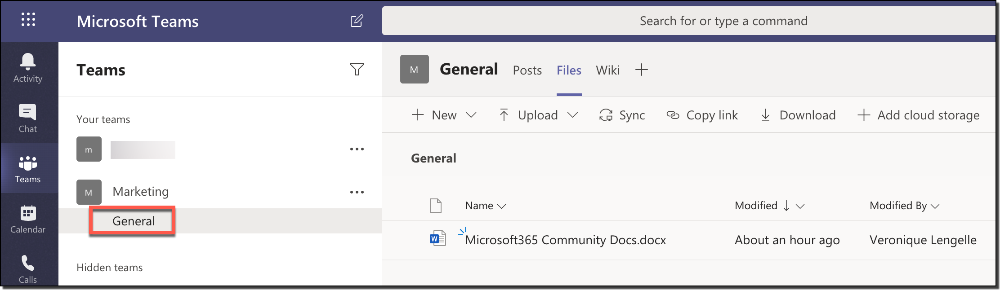
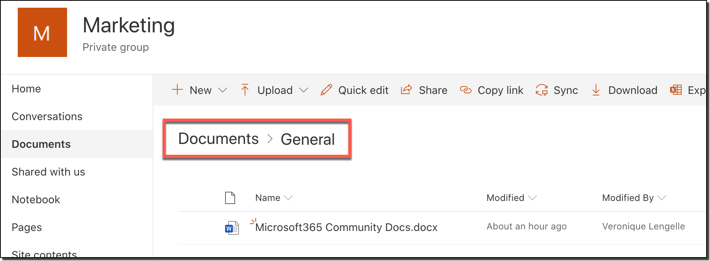

Should I store my files in Microsoft Teams or in SharePoint? An understanding of behind the scenes
[!include[content-disclaimer](../includes/content-disclaimer.md)]To use a product efficiently, it's important to understand a minimum about it. What it does, what can you do with it, what are the limitations, etc.
Microsoft Teams is the hub for teamwork. It allows for collaboration, chat, calls, meetings, and so much more! SharePoint Online is primarily a document management and intranet platform where you store, collaborate, and share information seamlessly across the organization, and is also part of Microsoft 365.
Note the key word here being collaboration. So it's no surprise that they would interact with each other in some way.
What's the relationship between the two?
Every time you create a new Team, the following are also created in the background:
- Microsoft 365 Group (ex Office 365 Group)
- SharePoint Online Team Site
- Exchange Online shared mailbox & calendar
- OneNote notebook
- Other services like Power BI, Planner
As you can see above, a site is created to store your documents. Meaning that each time you share files in a Team, they are stored in the associated site in SharePoint! Not in Microsoft Teams.
Note
Files shared in private chats are stored in the sender's OneDrive for Business.
But where are my files exactly?
The exact location depends on which Teams channel you share(d) them in. Every Team has a default channel ,which historically was called General. These days, the person provisioning the Team can decide that that channel is called, but every Team has at least one channel. The files shared in this channel will be stored in the SharePoint site, in the Documents library, within the General folder. If you create a Teams channel called "Project A", files shared in this channel will be stored in the Documents library in SharePoint under the folder called "Project A", and so on...
This applies to 'Standard' channels. Private channels and Shared channels have a different architecture which consists in having a separate site with different permissions from the Team. More information is available on the official Microsoft documentation: Private Channels in Microsoft Teams and Shared Channels in Microsoft Teams_.


Note
Terminology is also important. A channel name in Microsoft Teams will have the same folder name in the associated SharePoint site under the 'Documents' library.
How do I access my files?
You can access your files within Microsoft Teams or via SharePoint Online. It depends on which interface you feel the most comfortable with. Of course, if you need to do more with your files (such as apply advanced settings, implement views and columns), then you need to go into SharePoint.
Accessing via Microsoft Teams
You can reach your files by first going into the channel, and then selecting the Files tab to the right of the Posts tab at the top. All the folders and files are listed with their Modified and Modified by columns (which can be clicked to change the sort order).
The interface is similar to SharePoint. At the top, you can create new files and folders, upload files, download files, and so on. You can also select different Views, which mimic those created in SharePoint, filter the view, and use the 'i' icon to open the details pane.
You can also open the associated site directly from Microsoft Teams. Select Open in SharePoint from the Files tab menu. The associated SharePoint site will open in a browser and show the contents of the channel folder.
In case you only want to open a specific file, this is also possible. This time, navigate to the Files tab of the channel, click on the ellipses (...) that appears when you mouseover a file, and select Open in SharePoint from the menu that appears. Although you'd think it would filter the view for only that document, or select it or something, it doesn't. You will still need to scroll or filter or search in the SharePoint library.
Accessing via SharePoint Online
If you feel comfortable using the SharePoint Online interface, feel free to go directly to the site. The common URL is structured like this: https://<tenant-name>.sharepoint.com/sites/<Team-name>/Shared%20Documents/<channel-name>
The site should also appear in your SharePoint app bar, along with all the other sites you have access to.
Who can access or see my files?
As with all content in Microsoft 365, and in thats case, specifically SharePoint, security trimming applies to these files. Users can view and search only content they have access to, which is totally respected between Microsoft Teams and SharePoint Online. Therefore, when you add or remove users from a Team, their access is also added or removed from the SharePoint site.
Are my changes reflected?
Yes. Wherever you are making changes to files and documents, they are saved. And you always have the latest version of the document, whether you are in Microsoft Teams or in SharePoint Online.
Conclusion
There is literally no difference between storing your files in Microsoft Teams or in SharePoint. They are, in reality, just two views of the same file store. You can access, create, edit or otherwise interact with them in either place.
SharePoint will give you more control and extra capabilities, which is great for power users. You can create and trigger workflows from SharePoint, and access Version History for example. However Teams feels simpler and more 'in their workflow' for many users. They may feel that they can collaborate more easily. There are some also nice touches, such as making a document into a channel tab for extra focus/rapid access (though both let you Pin to top, which has a similar benefit).
Whichever way people prefer is fine. Your power users and content owners may need to know about both.
Principal author: Veronique Lengelle, MVP Updates: Simon Hudson, MVP